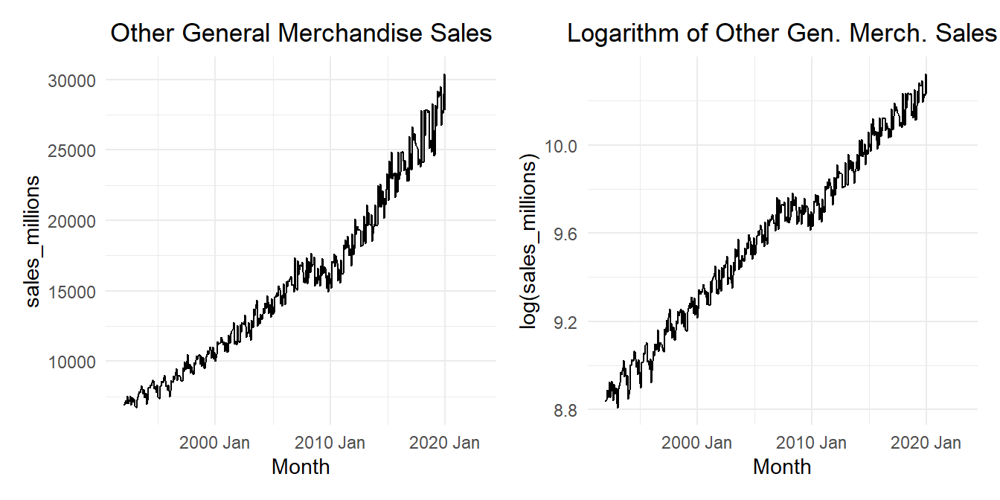

The time series \(\{x_t\}\) is an autoregressive process of order \(p\), denoted as \(AR(p)\), if \[
x_t = \alpha_1 x_{t-1} + \alpha_2 x_{t-2} + \alpha_3 x_{t-3} + \cdots + \alpha_{p-1} x_{t-(p-1)} + \alpha_p x_{t-p} + w_t ~~~~~~~~~~~~~~~~~~~~~~~ (4.15)
\]
where \(\{w_t\}\) is white noise and the \(\alpha_i\) are the model parameters with \(\alpha_p \ne 0\).
The \(AR(p)\) model can be expressed as: \[
\underbrace{\left( 1 - \alpha_1 \mathbf{B} - \alpha_2 \mathbf{B}^2 - \cdots - \alpha_p \mathbf{B}^p \right)}_{\theta_p \left( \mathbf{B} \right)} x_t = w_t
\]
Moving Average (MA) Models
The definition of an \(MA(q)\) model is:
Definition of a Moving Average (MA) Model
We say that a time series \(\{x_t\}\) is a moving average process of order \(q\), denoted as \(MA(q)\), if each term in the time series is a linear combination of the current white noise term and the \(q\) most recent past white noise terms.
It is given as: \[
x_t = w_t + \beta_1 w_{t-1} + \beta_2 w_{t-2} + \beta_3 w_{t-3} + \cdots + \beta_{q-1} w_{t-(q-1)} + \beta_q w_{t-q}
\]
where \(\{w_t\}\) is white noise with zero mean and variance \(\sigma_w^2\), and the \(\beta_i\) are the model parameters with \(\beta_q \ne 0\).
Written in terms of the backward shift operator, we have \[
x_t = \underbrace{\left( 1 + \beta_1 \mathbf{B} + \beta_2 \mathbf{B}^2 + \beta_3 \mathbf{B}^3 + \cdots + \beta_{q-1} \mathbf{B}^{q-1} + \beta_q \mathbf{B}^{q} \right)}_{\phi_q(\mathbf{B})} w_t
\]
Putting the \(AR\) and \(MA\) models together, we get the \(ARMA\) model.
Definition of an Autogregressive Moving Average (ARMA) Model
A time series \(\{ x_t \}\) follows an autoregressive moving average (ARMA) model of order \((p, q)\), which we write as \(ARMA(p,q)\), if it can be written as:
We can write this as: \[
\theta_p \left( \mathbf{B} \right) x_t
=
\phi_q \left( \mathbf{B} \right) w_t
\]
Facts about ARMA Processes
The following facts are true for \(ARMA(p,q)\) processes:
The ARMA process is stationary if all the roots of \(\theta_p \left( \mathbf{B} \right)\) are greater than 1 in absolute value.
The ARMA process is invertible if all the roots of \(\phi_q \left( \mathbf{B} \right)\) are greater than 1 in absolute value.
The special case \(ARMA(p,0)\) is the \(AR(p)\) model.
The special case \(ARMA(0,q)\) is the \(MA(q)\) model.
An \(ARMA\) model will usually require fewer parameters than a single \(MA\) or \(AR\) model. This is called parameter parsimony.
If \(\theta\) and \(\phi\) have a common factor, a stationary model can be simplified. This is called parameter redundancy. As an example, the model \[
\left( 1 - \frac{1}{2} \mathbf{B} \right)\left( 1 - \frac{1}{3} \mathbf{B} \right) x_t
=
\left( 1-\frac{1}{2} \mathbf{B} \right)\left( 1 - \frac{1}{4} \mathbf{B} \right) w_t
\] is the same as the model \[
\left( 1 - \frac{1}{3} \mathbf{B} \right) x_t
=
\left( 1 - \frac{1}{4} \mathbf{B} \right) w_t
\]
Comparison of AR and MA Models
ACF and PACF of an \(AR(p)\) Process
We can use the pacf and acf plots to assess if an \(AR(p)\) or \(MA(q)\) model is appropriate. For an \(AR(p)\) or \(MA(q)\) process, we observe the following:
AR(p)
MA(q)
ARMA(p,q)
ACF
Tails off
Cuts off after lag \(q\)
Tails off
PACF
Cuts off after lag \(p\)
Tails off
Tails off
Analyzing Time Series with a Regular Seasonal Pattern
Here are some steps you can use to guide your work as you analyze time series with a regular seasonal pattern. Even though these are presented linearly, you may find it helpful to iterate between some of the steps as needed.
Analyzing a Time Series with a Regular Seasonal Pattern
Create a time plot of the series
Determine an appropriate model for the trend and seasonality; call this Model 1
Regression
Holt-Winters
Additive / Multiplicative Decomposition
Other Techniques
Use AIC/AICc/BIC (or other metrics) and your reasoning skills to choose the best model
Obtain the residuals
Check the residuals of Model 1 for evidence of autocorrelation and non-stationarity
Time plot of the residuals
ACF plot
PACF plot
Fit an AR/MA/ARMA model to the (stationary) residuals; call this Model 2
Check the residuals of Model 2 for evidence of autocorrelation and normality
ACF plot
PACF plot
Histogram
Forecast the trend and seasonality of the time series using Model 1
Forecast the residuals of Model 1 using Model 2
Add the two forecasts together
Plot and summarize the resulting forecast
Refine the models above as needed
Class Activity: Model for the Residuals from the Rexburg Weather Model (15 min)
Review
We now review the model we built in Chapter 5 Lesson 3 for the monthly average of the daily high temperature in Rexburg, Idaho.
Show the code
weather_df <- rio::import("https://byuistats.github.io/timeseries/data/rexburg_weather_monthly.csv") |>mutate(dates =my(date_text)) |>filter(dates >=my("1/2008") & dates <=my("12/2023")) |>rename(x = avg_daily_high_temp) |>mutate(TIME =1:n()) |>mutate(cos1 =cos(2* pi *1* TIME/12),cos2 =cos(2* pi *2* TIME/12),cos3 =cos(2* pi *3* TIME/12),cos4 =cos(2* pi *4* TIME/12),cos5 =cos(2* pi *5* TIME/12),cos6 =cos(2* pi *6* TIME/12),sin1 =sin(2* pi *1* TIME/12),sin2 =sin(2* pi *2* TIME/12),sin3 =sin(2* pi *3* TIME/12),sin4 =sin(2* pi *4* TIME/12),sin5 =sin(2* pi *5* TIME/12),sin6 =sin(2* pi *6* TIME/12)) |>mutate(zTIME = (TIME -mean(TIME)) /sd(TIME)) |>as_tsibble(index = TIME)weather_df |>as_tsibble(index = dates) |>autoplot(.vars = x) +geom_smooth(method ="lm", se =FALSE, color ="#F0E442") +labs(x ="Month",y ="Mean Daily High Temperature (Fahrenheit)",title ="Time Plot of Mean Daily Rexburg High Temperature by Month",subtitle =paste0("(", format(weather_df$dates %>%head(1), "%b %Y"), endash, format(weather_df$dates %>%tail(1), "%b %Y"), ")") ) +theme_minimal() +theme(plot.title =element_text(hjust =0.5),plot.subtitle =element_text(hjust =0.5) )
Figure 1: Time plot of the monthly mean daily high temperatures in Rexburg Idaho, in degrees Fahrenheit
We chose the “Reduced Linear 5” model. For convenience, we reprint the coefficients here.
num_months <- weather_df |>as_tibble() |> dplyr::select(TIME) |>tail(1) |>pull()df <-tibble( TIME =seq(1, num_months, 0.01) ) |>mutate(cos1 =cos(2* pi *1* TIME/12),cos2 =cos(2* pi *2* TIME/12),cos3 =cos(2* pi *3* TIME/12),cos4 =cos(2* pi *4* TIME/12),cos5 =cos(2* pi *5* TIME/12),cos6 =cos(2* pi *6* TIME/12),sin1 =sin(2* pi *1* TIME/12),sin2 =sin(2* pi *2* TIME/12),sin3 =sin(2* pi *3* TIME/12),sin4 =sin(2* pi *4* TIME/12),sin5 =sin(2* pi *5* TIME/12),sin6 =sin(2* pi *6* TIME/12)) |>mutate(zTIME = (TIME -mean(TIME)) /sd(TIME)) |>as_tsibble(index = TIME)linear5_ts <- reduced5_linear_lm |>forecast(df) |>as_tibble() |> dplyr::select(TIME, .mean) |>rename(value = .mean) |>mutate(Model ="Linear 5")data_ts <- weather_df |>as_tibble() |>rename(value = x) |>mutate(Model ="Data") |> dplyr::select(TIME, value, Model)combined_ts <-bind_rows(data_ts, linear5_ts) point_ts <- combined_ts |>filter(TIME ==floor(TIME))okabe_ito_colors <-c("#000000", "#E69F00")combined_ts |>ggplot(aes(x = TIME, y = value, color = Model)) +geom_line() +geom_point(data = point_ts, alpha =0.5) +labs(x ="Month Number",y ="Temperature (Fahrenheit)",title ="Monthly Average of Daily High Temperatures in Rexburg",subtitle =paste0("(", format(weather_df$dates %>%head(1), "%b %Y"), endash, format(weather_df$dates %>%tail(1), "%b %Y"), ")") ) +scale_color_manual(values = okabe_ito_colors[1:nrow(combined_ts |>as_tibble() |>select(Model) |>unique())], name ="" ) +theme_minimal() +theme(plot.title =element_text(hjust =0.5),plot.subtitle =element_text(hjust =0.5),legend.position ="top", # Position the legend at the toplegend.direction ="horizontal"# Set the legend direction to horizontal )
Figure 2: Time plot of the monthly mean daily high temperatures in Rexburg Idaho, in degrees Fahrenheit; the fitted values from the regression model are given in orange
Fitting an ARMA(p,q) Model
First, we create an acf and pacf plot of the residuals from the model above.
Figure 6: PACF plot of the residuals from the \(ARMA(1,1)\) model
Small-Group Activity: Industrial Electricity Consumption in Texas (20 min)
These data represent the amount of electricity used each month for industrial applications in Texas.
Show the code
elec_ts <- rio::import("https://byuistats.github.io/timeseries/data/electricity_tx.csv") |> dplyr::select(-comments) |>mutate(month =my(month)) |>mutate(t =1:n(),std_t = (t -mean(t)) /sd(t) ) |>mutate(cos1 =cos(2* pi *1* t /12),cos2 =cos(2* pi *2* t /12),cos3 =cos(2* pi *3* t /12),cos4 =cos(2* pi *4* t /12),cos5 =cos(2* pi *5* t /12),cos6 =cos(2* pi *6* t /12),sin1 =sin(2* pi *1* t /12),sin2 =sin(2* pi *2* t /12),sin3 =sin(2* pi *3* t /12),sin4 =sin(2* pi *4* t /12),sin5 =sin(2* pi *5* t /12) ) |>as_tsibble(index = month)elec_plot_raw <- elec_ts |>autoplot(.vars = megawatthours) +labs(x ="Month",y ="Megawatt-hours",title ="Texas' Industrial Electricity Use" ) +theme_minimal() +theme(plot.title =element_text(hjust =0.5) )elec_plot_log <- elec_ts |>autoplot(.vars =log(megawatthours)) +labs(x ="Month",y ="log(Megwatt-hours)",title ="Log of Texas' Industrial Electricity Use" ) +theme_minimal() +theme(plot.title =element_text(hjust =0.5) )elec_plot_raw | elec_plot_log
Check Your Understanding
Use the Texas industrial electricity consumption data to do the following.
Select an appropriate model to fit the time series using the AIC, AICc, or BIC critera.
Determine the best \(ARMA(p,q)\) model for the residuals.
Small Group Activity: Fitting an ARMA(p,q) Model to the Retail Data (30 min)
Apply what you have learned in this lesson to the retail sales data. In particular, consider full-service restaurants (NAICS code 722511).
Check Your Understanding
Use the total retail sales for full-service restaurants to do the following.
Select an appropriate model to fit the time series using the AIC, AICc, or BIC critera.
Determine the best \(ARMA(p,q)\) model for the residuals.
Forecast the data for the next 5 years using the regression model.
Forecast the residuals for the next 5 years using ARMA model.
Sum the two forecasted time series and plot the combined series against the original retail sales data.
Here is some code you can use to help you get started.
Show the code
# Read in retail sales data for "Full-Service Restaurants"retail_ts <- rio::import("https://byuistats.github.io/timeseries/data/retail_by_business_type.parquet") |>filter(naics ==722511) |>mutate(month =yearmonth(as_date(month)),month_number =month(month) ) |>mutate(t =1:n()) |>mutate(std_t = (t -mean(t)) /sd(t)) |>mutate(cos1 =cos(2* pi *1* t /12),cos2 =cos(2* pi *2* t /12),cos3 =cos(2* pi *3* t /12),cos4 =cos(2* pi *4* t /12),cos5 =cos(2* pi *5* t /12),cos6 =cos(2* pi *6* t /12),sin1 =sin(2* pi *1* t /12),sin2 =sin(2* pi *2* t /12),sin3 =sin(2* pi *3* t /12),sin4 =sin(2* pi *4* t /12),sin5 =sin(2* pi *5* t /12) ) |>mutate(in_great_recession =ifelse(ym(month) >=my("December 2007") & month <=my("June 2009"), 1, 0),after_great_recession =ifelse(ym(month) >my("June 2009"), 1, 0) ) |>as_tsibble(index = month)retail_plot_raw <- retail_ts |>autoplot(.vars = sales_millions) +labs(x ="Month",y ="sales_millions",title ="Other General Merchandise Sales" ) +theme_minimal() +theme(plot.title =element_text(hjust =0.5) )retail_plot_log <- retail_ts |>autoplot(.vars =log(sales_millions)) +labs(x ="Month",y ="log(sales_millions)",title ="Logarithm of Other Gen. Merch. Sales" ) +theme_minimal() +theme(plot.title =element_text(hjust =0.5) )retail_plot_raw | retail_plot_log

Figure 7: Time plot of the time series (left) and the natural logarithm of the time series (right)
Figure 10: Partial correlogram of the residuals from the fitted regression model
Show the code
################################################################# Be sure to adjust this model to match what you did above ################################################################### Model without any seasonal trendsretail_no_seasonal_lm <- retail_ts |>model(retail_full_quad =TSLM(log(sales_millions) ~ (in_great_recession * std_t) + (after_great_recession * std_t) + (in_great_recession *I(std_t^2) ) + (after_great_recession *I(std_t^2) )+ (in_great_recession *I(std_t^3) ) + (after_great_recession *I(std_t^3) ) ) )retail_ts |>autoplot(.vars = sales_millions) +# ggplot(mapping = aes(x = month, y = sales_millions)) +# geom_line() +geom_line(data =augment(retail_no_seasonal_lm),aes(x = month, y = .fitted),color ="#E69F00",linewidth =1 ) +geom_line(data =augment(retail_final_lm),aes(x = month, y = .fitted),color ="blue",alpha =0.7,# linewidth = 1 ) +labs(x ="Month",y ="Sales (Millions of U.S. Dollars)",title =paste0(retail_ts$business[1], " (", retail_ts$naics[1], ")") ) +theme_minimal() +theme(plot.title =element_text(hjust =0.5))
Figure 11: Time plot of the retail sales data for full-service restaurants; the regression curve without the seasonal terms is given in orange; the predicted values from the model are given in blue
Table 3: Results from the process of fitting an ARMA model to the residuals of the model for the total sales in full-service restaurants in the United States